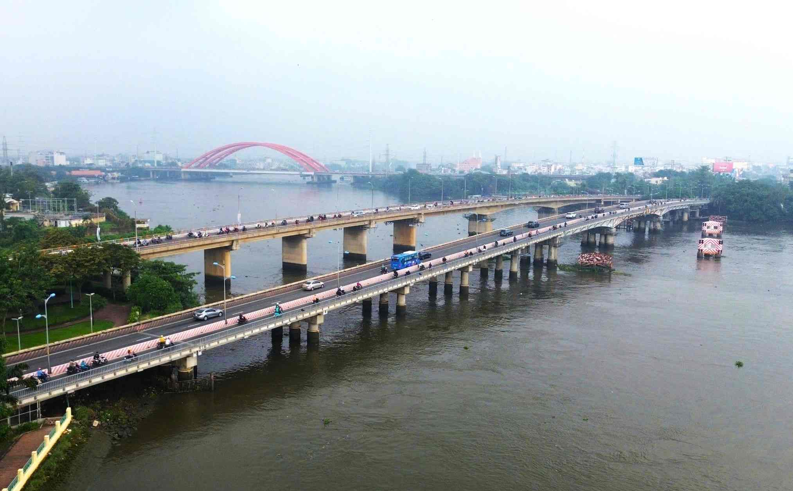

Cây cầu quan trọng ở cửa ngõ phía Đông TP. Hồ Chí Minh
Cầu Bình Triệu là một trong những cây cầu trọng yếu ở TP. Hồ Chí Minh, nằm trên tuyến Quốc lộ 13, bắc qua rạch Bà Tàng và kênh nối sông Sài Gòn. Cầu góp phần nối trung tâm TP.HCM với Bình Dương và khu vực Đông Nam Bộ.
| Tên chính thức | Cầu Bình Triệu |
|---|---|
| Tên nhân gian | Cầu Bình Triệu 1 / 2 |
| Vị trí | Quận Thủ Đức – Quận Bình Thạnh (TP.HCM) |
| Bắc qua | Rạch Bà Tàng / Kênh nối sông Sài Gòn |
| Năm khởi công | thời Việt Nam Cộng hòa (Bình Triệu 1), 2001 (Bình Triệu 2) |
| Năm hoàn thành | 2003 (Bình Triệu 2) |
| Chiều dài | 554 m(Bình Triệu 1), 560 m (Bình Triệu 2) |
| Chiều rộng | 12,65 m(Bình Triệu 1), 12,25 m (Bình Triệu 2) |
| Tải trọng thiết kế | HL-93 |
| Loại kiến trúc | Cầu dầm thép + bê tông cốt thép |
| Đơn vị thiết kế | Sở Giao thông Vận tải TP.HCM |
| Đơn vị thi công | Tổng công ty Xây dựng Công trình Giao thông 1 (CIENCO 1) |
| Tổng mức đầu tư | 133 tỷ đồng(Bình Triệu 1), 431 tỷ đồng(Bình Triệu 2) |
Cầu Bình Triệu tạo ra trục giao thông quan trọng kết nối TP.HCM với tỉnh Bình Dương, hỗ trợ vận tải hàng hóa, giảm tải cho đường nội đô, thúc đẩy phát triển thương mại và liên kết vùng miền Đông Nam Bộ.
Cầu Bình Triệu 1 chính thức thông xe năm 1995, sau đó Cầu Bình Triệu 2 được hoàn thành vào năm 2008 để tăng khả năng lưu thông và mở rộng quốc lộ 13.

Cầu Bình Triệu bắc qua rạch Bà Tàng – TP.HCM
Video thực tế cảnh giao thông qua Cầu Bình Triệu
Nếu video không hiển thị, xem trực tiếp tại: YouTube – Cầu Bình Triệu
| Tên cầu | Chiều dài | Năm hoàn thành | Loại cầu |
|---|---|---|---|
| Cầu Bình Triệu | 402 m | 1995 / 2008 | Dầm thép + bê tông |
| Cầu Đồng Nai | 461 m | 2009 | Bê tông cốt thép |
| Cầu Sài Gòn | 1.010 m | 1961 | Bê tông cốt thép |